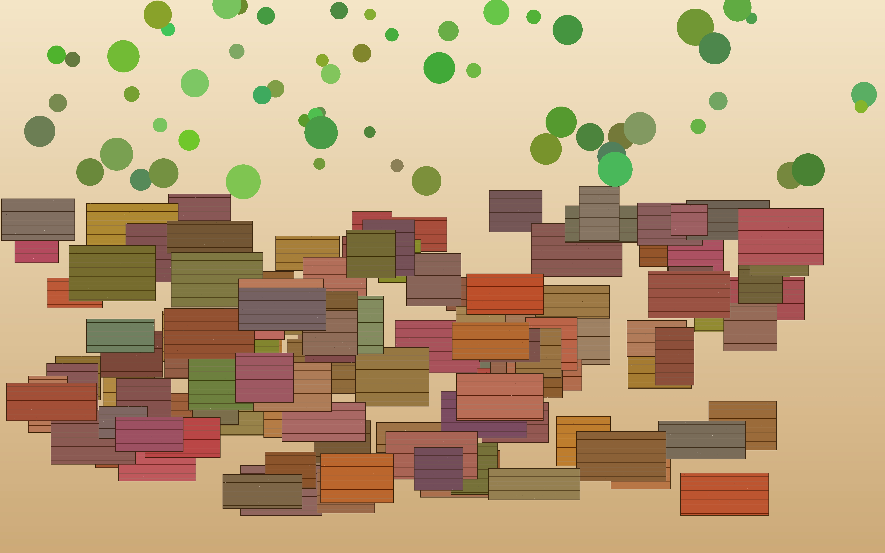

No one in our community should go hungry.
Pantry Perth provides free groceries, fresh produce, and a friendly chat to anyone who needs it. Three locations across Perth, open six days a week.
See what's available todayAbout us
We're a volunteer-run charity supporting families, students, and individuals facing food insecurity. Whether you're picking up a parcel or dropping off donations, you'll always be welcomed by name.
Last year we provided over 12,000 food parcels and partnered with 23 local schools, churches, and community groups.
Support our work
A donation of any amount helps us keep shelves stocked. Every $20 fills a family food parcel.
Find us
- Northbridge: 14 Aberdeen St — Tue, Wed, Thu 9am–2pm
- Cannington: 8 Carousel Ln — Mon, Wed, Fri 10am–3pm
- Mirrabooka: 3 Sudbury Rd — Tue, Thu, Sat 9am–1pm